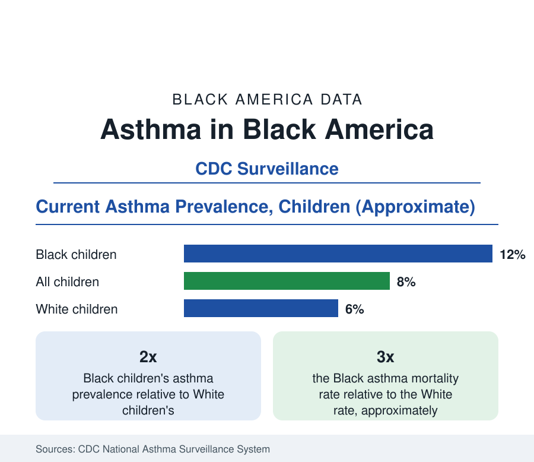

Black Public Health
Asthma Among Black Americans: The Childhood Burden
Black children develop asthma at roughly twice the national rate and die from it at several times the rate. The CDC surveillance data.

About one in eight Black children in the United States has asthma — roughly 12 percent, twice the rate for White children — and Black Americans of all ages die from asthma at roughly three times the White rate in the federal surveillance data. Asthma is among the most common chronic diseases of childhood nationally, and its burden in the Black population, from diagnosis through emergency care to mortality, is the most lopsided of any common condition in this section. This article reports the CDC's asthma surveillance data.
Prevalence: Who Has Asthma
The National Health Interview Survey and the CDC's asthma surveillance system track current asthma — a reported diagnosis with the condition still present. The childhood table's ordering is stable across decades of measurement: Puerto Rican children record the nation's highest prevalence, Black children next at roughly 12 percent, then the overall child population near 8 percent, with White children around 6 percent and Asian children lowest. Among adults the Black rate runs around 10 to 11 percent against 8 percent overall, with Black women's the highest adult rate. Prevalence rose for all groups across the late twentieth century and has plateaued at the current levels, leaving the ratios — roughly double for Black children — as the durable finding.
Severity: Attacks, Emergency Rooms, Hospitals
Prevalence is the mildest of the disparities in the asthma data. The severity gradient steepens at each level of care: Black children visit emergency departments for asthma at roughly four to five times the White rate in the healthcare utilization data, are hospitalized at roughly three times the rate, and die at rates the mortality files put at several times the White figure in childhood and roughly triple in the population overall. The clinical literature reads the gradient as a control problem rather than a diagnosis problem: asthma is manageable with daily controller medication and trigger control, and the utilization pattern — episodic rescue care substituting for continuous management — is the signature of management not reaching the patient, through the channels this section documents elsewhere: coverage continuity, pharmacy access, primary care supply, and housing.
The Environmental Layer
Asthma is the public health condition most directly produced by housing, and its geography in the data is the geography of the housing stock. The documented exposure set: cockroach and mouse allergen in older multifamily housing (a landmark inner-city asthma study found allergen sensitization plus exposure among the strongest predictors of severity), mold and moisture in aging buildings, diesel particulate along freight corridors and highways, gas-stove nitrogen dioxide in small apartments, and tobacco smoke exposure, which remains higher for Black children in the biomarker data. The neighborhood asthma maps of the big cities in this reference — prevalence doubling and tripling between districts a few miles apart — are effectively maps of these exposures layered over the housing history the census section records. Interventions that remediate housing (integrated pest management, moisture repair, HEPA filtration) show measurable symptom reductions in the trial literature, one of the cleaner cause-and-effect records in environmental health.
Management and the Newer Therapies
The treatment data follow the section's pattern: controller medication use — the daily inhaled therapy that prevents attacks — runs below guideline levels for Black patients in the pharmacy and survey data, rescue inhalers overused in compensation, and the biologic therapies for severe asthma (injectable agents that have transformed severe disease) reach Black patients at rates below their share of the severe population in the early utilization studies. School-based asthma programs — school nurses administering controller therapy, a model with strong trial results in several cities — exist precisely because the school is where the population reliably is. Asthma action-plan possession, a basic quality measure, runs lowest in the populations with the highest attack rates.
Reading the Asthma Data
Asthma is the section's environmental case study: a genetic-predisposition condition whose outcomes are decided by housing, air, and the continuity of ordinary care. Twice the childhood prevalence, four to five times the emergency use, three times the deaths — the gradient from the first figure to the last is the distance between having a condition and having it managed, measured in a single disease.
More in Black Public Health
Hypertension Among Black Adults: Prevalence, Control, and Consequences
About 55 percent of Black adults have hypertension — the highest rate of any U.S. group. Prevalence, onset, control, and the stroke, heart, and kidney consequences in the data.
Diabetes Among Black Adults: Prevalence and Complications
Nearly one in five Black adults has diabetes, diagnosed or undiagnosed — and its complications fall with particular weight. The CDC data on prevalence, control, and outcomes.
Black Life Expectancy: The Gap at Birth and Its Causes
Black life expectancy at birth is about 73 years, roughly five years below the national figure — the summary measure of every health gap in this section. The CDC data.
Source: CDC, National Asthma Surveillance; National Center for Health Statistics; American Lung Association analyses.